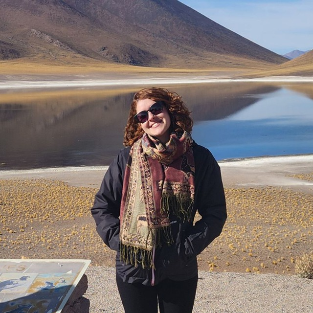
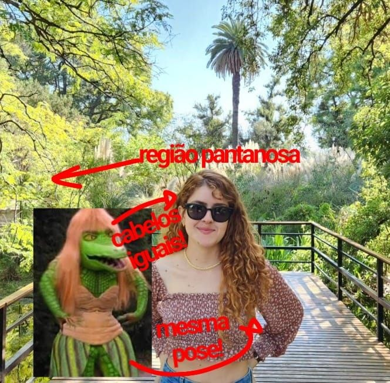
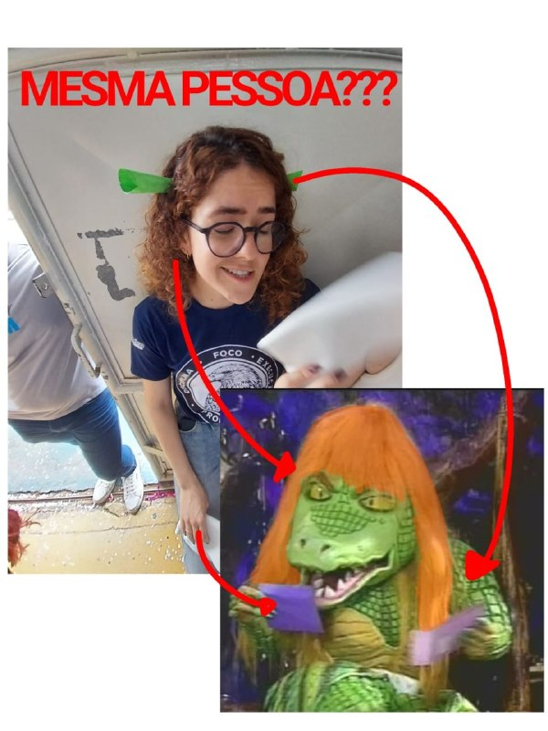
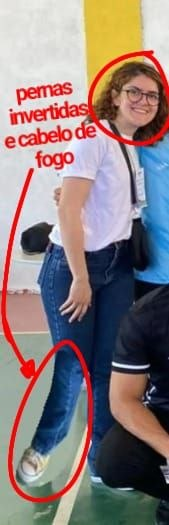
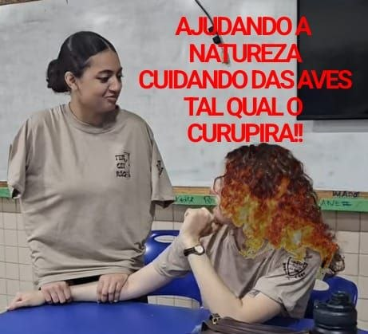

Investigação Nº 002 · Folclore Brasileiro · Arapiraca, AL

SUSPEITA PRINCIPAL
Prof. Marina Sales — Física
🔍 as evidências são irrefutáveis
Durante semanas, agentes do 3º Ano B coletaram evidências perturbadoras sobre a identidade real da Professora Marina Sales, docente de Física do Colégio Santa Afra.
As investigações apontam para uma conclusão chocante: Marina não é apenas uma professora. Ela é, na verdade, uma entidade dual do folclore brasileiro — ora Cuca, ora Curupira — que assumiu forma humana para ensinar as leis da física (e aterrorizar os alunos com provas de cinemática).
Quando está de bom humor, os pés apontam para trás — sinal claro do Curupira, protetora da floresta e guardiã dos que estudam direito. Quando a turma não faz o dever... a Cuca acorda. E ela acorda com lista de exercícios.
As evidências fotográficas a seguir foram reunidas com grande risco pessoal pelos agentes de campo.



